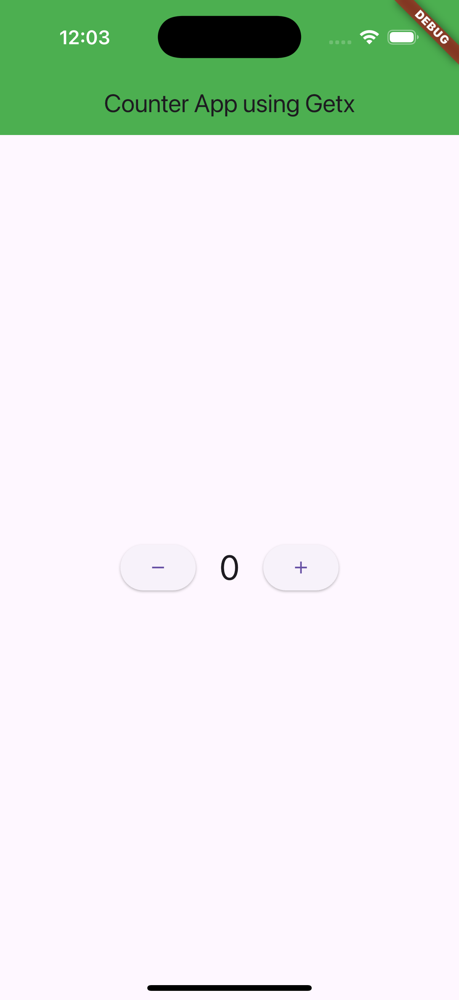

Date: 2026-10-24
Simulator: iPhone 16 Pro, iOS 18.2 (UDID 069767CC-3008-4AB6-BC00-F12882899966)
App ID: com.example.flutterBatchTwoAssignment
All four flows were blocked before execution. Maestro returned
“Device became unreachable during deviceInfo.” The folder run reported
success: false and total_commands_executed: 0.
This is a simulator connectivity issue; it is not an application test failure.
| Flow | Expected behavior | Outcome |
|---|---|---|
| counter_increment.yaml | 0 → 1 after increment tap | Blocked before commands |
| counter_decrement.yaml | 0 → -1 after decrement tap | Blocked before commands |
| counter_regression.yaml | 0 → 1 → 2 → 1 | Blocked before commands |
| smoke.yaml | Counter app title visible | Blocked before commands |
No app interaction failed, so there was no failing screen to capture. The following image is a normal initial-state diagnostic only and is not bug evidence:

Flow YAML parsed successfully with Ruby's YAML parser. Maestro produced no execution screenshot or HTML report because device initialization failed before the first command.